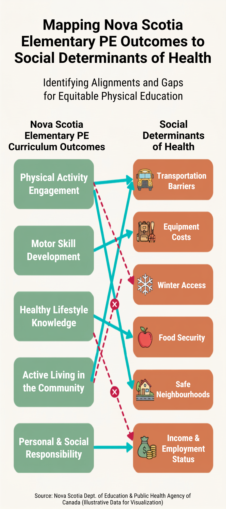
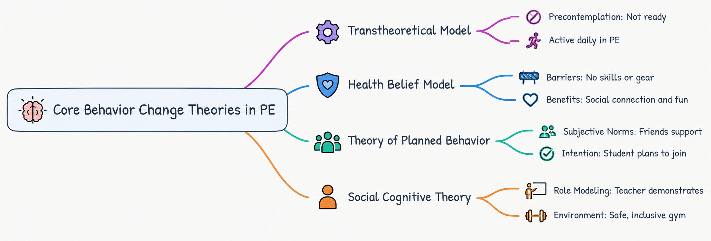
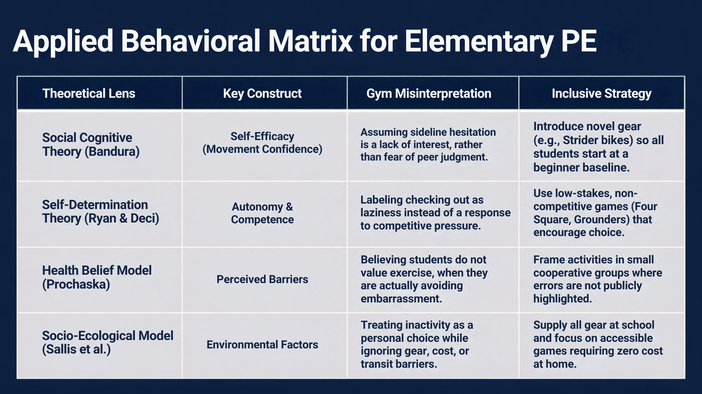

Week 1 Reflection: Policy Gaps and the Reality of Teaching PE in the CBRM
The readings this week made me think more about something I see in my own teaching: how much responsibility we place on individuals to be healthy without always looking at what makes healthy choices possible in the first place. Hancock (2011) points out that Canada hasn't actually shifted resources into prevention, despite all the talk about health promotion. Much of the focus remains on treating illness rather than preventing it. Raphael et al. (2020) make a similar point about how health is often understood mainly through personal choices such as diet and exercise, without enough attention to the conditions people are living in.
As a PE teacher here in Cape Breton, I see some of these challenges in my own school community. PE can teach movement skills and encourage students to be active, but that doesn't mean every student has the same opportunity to be active outside of school. Many families are dealing with real financial strain. Kids show up in shoes that are falling apart. Families can't always afford gym clothes or water bottles. In winter, when we want to take classes outside, not every student has proper winter gear. When we organize school sports like soccer, games happen right after school in communities that are far away with no bus service, so families can't always get their kids there.
Our breakfast and lunch programs are one example of how the school can help address some of these barriers. Knowing that students can get something to eat at school matters, especially when families are under financial pressure. It also makes me question how effective standard health-promotion messaging can be when students don't have the same resources or opportunities outside of school.
The video transcript also introduced Eisner's idea of the null curriculum. What stood out to me was that what schools leave out can matter just as much as what they formally teach. In PE and health, we can spend a lot of time talking about being active and making healthy choices without giving much attention to whether students have the resources to follow through on those messages. When we talk about healthy living without recognizing people's financial situations, we can make it sound like being unable to make healthy choices is simply a personal failing.
Telling students what they should do is only part of health promotion. There also needs to be time, funding, and real support to address the barriers families are facing. Even something as simple as organizing a sports activity or an opportunity outside school can involve transportation, equipment, scheduling, and whether families are able to get there. Teachers are already doing a lot, so this kind of work needs support beyond the classroom.
I created a Canva graphic this week that maps out our provincial PE outcomes alongside the social determinants of health. I wanted to look more closely at where the curriculum connects with real health factors and where there may be gaps between what we teach and the realities students experience in our school community.
Weekly Artifact

Figure 1. Visual mapping of Nova Scotia Elementary PE Curriculum outcomes against key social determinants of health.
References
Cameron, E., McGowan, E., & Memorial University of Newfoundland. (2015). Unit 1 video transcript [Video transcript]. Brightspace.
Hancock, T. (2011). Health promotion in Canada: 25 years of unfulfilled promise. Health Promotion International, 26(suppl 2), ii263–ii267.
Raphael, D., Bryant, T., Mikkonen, J., & Raphael, A. (2020). Social determinants of health: The Canadian facts (2nd ed.). York University. https://thecanadianfacts.org/The_Canadian_Facts-2nd_ed.pdf
Week 2 Reflection: What Messages Are We Actually Sending in PE?
There is a clear gap between what we teach students about being healthy and what they actually have access to outside of school, a reality I see regularly as a physical education teacher in rural schools. While we routinely encourage students to exercise, eat well, and get enough rest, we rarely ask whether they have the resources to do so. Raphael et al. (2020) point out that health is often pushed as a personal responsibility without considering whether a person has the resources to follow the advice. For example, I cannot expect my students to practice sport skills at home when they do not have access to basic equipment; many of my students had never even touched a football before my class. When I brought strider bikes to my school, it was the first time on a bike for many of them, and they absolutely loved it. Klein (2010) points out that people often judge someone's character based on their fitness, assuming that being active is just a matter of hard work. In PE class, it is easy for classmates or teachers to think a student is just being lazy when the truth is they have never had the chance to learn.
I think about this a lot in my own teaching, especially when I remember one specific student who lived and breathed soccer at school. He came from a large family without much money; his clothes were well-used and his shoes were falling apart. Even though he played every chance he got during free time, joining the after-school team or a community league wasn’t an option for him because of travel issues. While many schools I have worked at are willing to help with registration fees or equipment, getting students to and from extracurricular activities becomes the main barrier. This connects to intersectionality, which is something I'm still trying to fully understand. Crenshaw (1989) and Heard et al. (2020) talk about how someone's experience is shaped by a bunch of overlapping things rather than just one single barrier. If a student wants to play soccer, it isn't just about paying the registration fee. It's the ride to practice, the cost of gear, and whether they feel like they’ll fit in, all making participation more difficult.
And then there's what happens inside the gym itself. I have to actively catch myself to ensure I don't show accidental favoritism toward the naturally athletic or highly social students. I've noticed that when a gym environment heavily rewards natural ability, other students start checking out because they figure PE isn't really for them. Eisner's idea of the null curriculum, which our course brought up, stuck with me because it makes sense that what schools don't teach matters just as much as what they do teach (HKR 6003, 2015). In PE, we can say all the right things about being active and trying your best, but students are also learning other messages from what they see happening around them, whether those messages are intentional or not.
I see these barriers in my own classes when a student sits out during an activity. I try not to make assumptions about why they aren't participating because the reasons are often surprising, ranging from a grieving pet to a parent working away from home, which really highlights how life outside of school impacts what a student can handle in the class (Raphael et al., 2020). Along with personal stress, many students are not getting much free play outside of school. They tell me they spend most of their time on devices, especially on snow days, or in organized sports, so they rarely get to practice physical skills without supervision (Gray, 2011). Given this, PE class is often the only place they are expected to try new physical movements, making it easy to see why they might hold back in front of their peers. Rather than focusing on just sports, I include simple activities like Grounders, Capture the Flag, or Four Square. This teaches them skills they can use outside of PE (Baek et al., 2024). When children play without adults directly involved, they learn to work through conflicts and make quick decisions (Gray, 2011). Many students, like my daughter, are not interested in joining a competitive sports team, but giving them simple games they can organize with friends gives them a practical way to stay active in their own neighbourhoods.
I have also been rethinking how behavioral change models actually apply to these gym classes. While I was making an ePortfolio mind map this week to break down the core behavior change theories, I realized that I used to design my lessons based mostly on raw physical skills. I was completely missing whether a student actually felt comfortable participating. A student might have the coordination to complete most tasks, but as the Health Belief Model suggests, they will still sit out if the perceived barrier of messing up in front of their peers outweighs the perceived benefit of the game. To synthesize these behavioral models, I created a visual flowchart (Figure 2) illustrating how concepts from the Transtheoretical Model, the Theory of Planned Behavior, and Social Cognitive Theory directly inform how I need to structure my gym environment. Thinking about these factors together showed me that physical education is less about grading athletic skill and more about creating supportive environments where students actually intend to move (Klein, 2010).
As Thomas King argues, if we want a different message about health, we need to tell a different story (HKR 6003, 2015). In my class, this means shifting the focus away from athletic ability and who can run the fastest. Being good at a sport does not tell me if a student is going to stay active outside of school. Instead of just rewarding athleticism, my goal is to help them find physical activities that fit their actual lives, something they can just go outside and do with their friends.
Weekly Artifact: Core Behavior Change Theories

Figure 2. Visual flowchart synthesizing key behavior change theories (Transtheoretical Model, Health Belief Model, Theory of Planned Behavior, and Social Cognitive Theory) into practical PE contexts.
References
Baek, S., Dyson, B., Howley, D., & Shen, Y. (2024). Promoting an equity-based approach for social and emotional learning in physical education teacher education: International teacher educators’ perspectives. Sport, Education and Society, 29(1), 74–88.
Crenshaw, K. (1989). Demarginalizing the intersection of race and sex: A Black feminist critique of antidiscrimination doctrine, feminist theory and antiracist politics. University of Chicago Legal Forum, 1989(1), 139–167.
Gray, P. (2011). The decline of play and the rise of psychopathology in children and adolescents. American Journal of Play, 3(4), 443–463.
Heard, E., Fitzgerald, L., Wigginton, B., & Mutch, A. (2020). Applying intersectionality theory in health promotion research and practice. Health Promotion International, 35(4), 866–876.
HKR 6003. (2015). Health promotion in Canada [Video]. Memorial University of Newfoundland.
Klein, R. (2010). What is health and how do you get it? In J. M. Metzl & A. Kirkland (Eds.), Against health: How health became the new morality (pp. 15–25). New York University Press.
Raphael, D., Bryant, T., Mikkonen, J., & Raphael, A. (2020). Social determinants of health: The Canadian facts (2nd ed.). York University. https://thecanadianfacts.org/The_Canadian_Facts-2nd_ed.pdf
Week 3 Reflection: Beliefs, Barriers, and What Makes Health Promotion Realistic
Kim et al. (2012) surveyed university students and found that the perceived benefits of eating healthy food, along with the perceived barriers to getting it, significantly shaped what students intended to eat. I see this play out when I pack my daughter’s lunches. Cucumbers, peeled oranges, carrots, and apples used to go to school and come back home more often than not, while crackers, bread, and fruit leather never lasted. Neither of us lacked knowledge about what was healthy; she was a child choosing what she liked, and I was a parent tired of wasting food. I worry far less now that she eats the meals provided through the Nova Scotia School Lunch Program (n.d.), and I'm comfortable with the occasional pizza pop, partly because I grew up on Kraft Dinner, hot dogs, and bologna with a proper meal always alongside them. Among other families I see a different problem, since many students skip the school lunch and their parents end up buying extra lunches or working out how to keep food hot or cold all day. Kim et al. (2012) focus on personal beliefs, while my examples are all about practical hurdles like money and logistics. It feels like a stretch to take a model tested on university students and apply it to children and families. Jose et al. (2021) used this same model in Kerala, India, and found that the community's health beliefs were influenced by the government's healthcare system. Looking at that alongside my own examples makes me question how useful an individual-focused model is when families are up against shared barriers they can't control.
As a teacher, one of the clearest barriers I have seen involved a student that staff advised me against putting on the track team, even though he was my fastest runner. When he suddenly stopped showing up to track meets, his teacher eventually found out it was simply because his family didn't have a vehicle to get him there. It makes me think about how Kim et al. (2012) put so much weight on perceived barriers in their model, but for this student, the barrier wasn't just in his head, it was a real transportation issue that completely vanished once we organized a ride, and he actually ended up winning a medal. You see that same heavy reliance on individual adults over at my daughter's school, where the basketball team almost folded this year just because nobody was available to coach. I keep going back and forth on whether I should volunteer to take it on, but honestly, having zero basketball coaching experience while trying to juggle two master's courses makes me pretty hesitant to commit.
I also saw this from the patient's side during my own rehabilitation. I broke my leg while coaching track and field, demonstrating hurdles at full speed, and I now demonstrate loosely and tell students to do their best while staying safe. Physiotherapy rebuilt my strength and I still use some of those exercises, while osteopathic care worked well for me because the treatment happened during the appointment rather than adding more homework. Hill (2003) examines where complementary and alternative medicine fits within different models of health promotion, and I would probably place my experience closer to the medical model, since I was relying heavily on practitioners to address a physical problem rather than taking on all of the behaviour change myself. Even so, those appointments were the first thing I dropped once teaching and my master's coursework filled my schedule, so a treatment I valued still lost out to everything else. Students face the same pressure when practices, rides, and fees compete with the rest of family life, and an activity that is valuable on paper can still be the first thing to go.
As an uncertain young player I gravitated toward defence in hockey, and when I started playing again after minor hockey I regretted not trying more positions, which is why I encourage young athletes to try several roles before deciding what kind of player they are. A student who never tries a new position narrows their own options, but a student who never gets the chance to join a team has those options narrowed by circumstance. That second situation is where I see a connection to the HIPP Collaborative's focus on inclusion and collaboration (Memorial University, n.d.), including its emphasis on partnerships between the university and the community. Programs like the Capers Elementary League, which connects local children with Cape Breton University soccer players (Soccer Cape Breton, n.d.), show what that can look like, and they spread the load so one parent or teacher isn't carrying a program alone. I'm not sure yet whether something similar could work at my school, but it's the question I keep returning to.
Weekly Artifact: Reframing Health Barriers

Figure 3. A comparison matrix contrasting the individual focus of the Health Belief Model with the systemic realities and community strategies discussed in this reflection.
References
Hill, F. J. (2003). Towards a new model for health promotion? An analysis of complementary and alternative medicine and models of health promotion. Health Education Journal, 62(4), 369–380. https://doi.org/10.1177/001789690306200409
Jose, R., Narendran, M., Bindu, A., Beevi, N., Manju, L., & Benny, P. V. (2021). Public perception and preparedness for the pandemic COVID 19: A health belief model approach. Clinical Epidemiology and Global Health, 9, 41–46. https://doi.org/10.1016/j.cegh.2020.06.009
Kim, H., Ahn, J., & No, J. (2012). Applying the Health Belief Model to college students' health behavior. Nutrition Research and Practice, 6(6), 551–558. https://doi.org/10.4162/nrp.2012.6.6.551
Memorial University. (n.d.). HIPP: Health innovation through promotion & practice [Video transcript]. HKR 6003: Health Promotion in Canada, Unit 2 Required Materials.
Nova Scotia School Lunch Program. (n.d.). About the program. https://nslunch.ca/
Soccer Cape Breton. (n.d.). Capers elementary league. https://www.soccercapebreton.com/